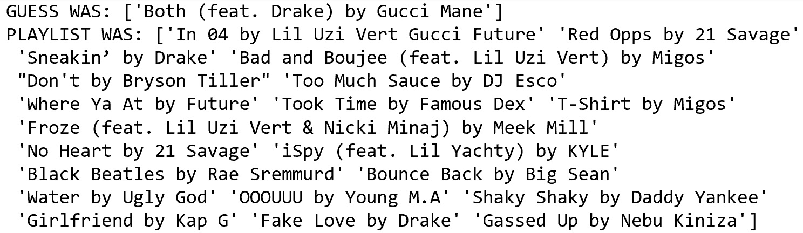
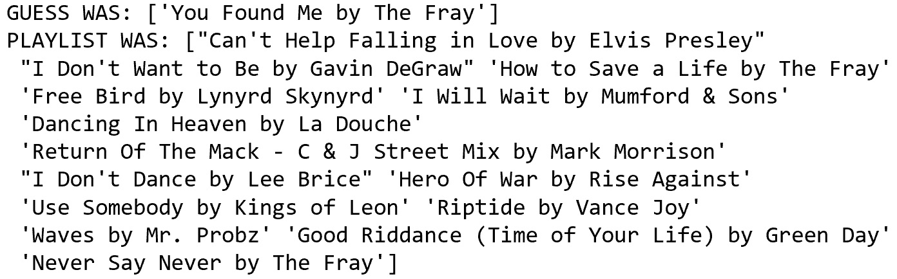
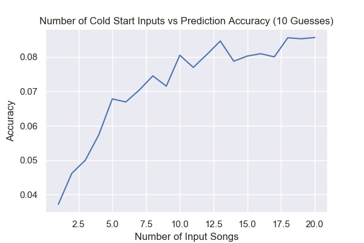

Results
For our original playlist generation evaluation, we held out a single random song from a playlist and predicted it based on all of the rest of the songs in the playlist. Our original assumption was that this task would be massively difficult due to the huge number of potential songs to choose from in order to exactly match a single one. Considering the baseline models had accuracies of ~0% for random prediction and 0.16% for the mode prediction, we were initially expecting very low amounts of correct predictions, on the magnitude of 0.5% accuracy. Our model surpassed both the baselines and expectations by a good deal.
| Random Baseline | Mode Baseline | Full Model | Random Baseline 10 Guesses | Mode Baseline 10 Guesses | Full Model 10 Guesses |
|---|---|---|---|---|---|
| ~0.00% | 0.16% | 4.39% | ~0.00% | 0.80% | 13.25% |
Our full model’s single guess accuracy was 4.39. We believe this confirms our intuition that collaborative filtering is an effective standalone method for solving this problem. Relatedly, the dataset must have some underlying trends that collaborative filtering is capturing quite well. Perhaps this is trivial, but our surprising success indicates that user behavior around playlists is fairly predictable based on general playlist patterns.
To evaluate the cold start problem, we randomly selected k songs in the dataset and predicted another randomly held out song based on those songs. The graph shows the success rate of our model as a function of k, the number of input songs we used per playlist to generate the predictions. A k of 1 represents the most difficult formulation of the cold start problem, predicting a song based off just a single input song, while increasing k gradually reduces the difficulty of the problem. We found a generally increasing relationship between k and accuracy, which we expected. With extremely low k, our model did perform much worse than using the entire playlist as input, but even low values of k had reasonable accuracy values given the difficulty of the problem in question.

The increase in accuracy was to be expected: increasing features of an underfit model generally increases predictive accuracy. One thing we were worried about, however, is the idea that the increases in accuracy comes less from improvements in the model, and more from decreases in the available options to select from. Prima facie , this is a ridiculous claim because narrowing one out of 40 million songs has a negligible impact. However, if the model is mainly working on playlists with extremely high similarity indexes to preexisting ones - for example the set of all Disney songs - then the collaborative filtering method probably only has a limited number of songs it has to recommend from. Culling that subset by one may have a much greater impact than was originally anticipated. To provide an example, perhaps after three input songs, all the songs are from the same movie soundtrack. The set of this movie soundtrack is only 10 songs long. Even if the model identifies that future recommendations should come from this soundtrack, it still only has a 1/7 chance of selecting the exact next song as our evaluation method requires. By adding two more songs to the input, if the trend of the movie soundtrack continues, then the chances improve to 1/5.
To explore this hypothesis, we checked the playlist inputs of the correct guesses. Our results provided strong evidence to invalidate this hypothesis. The below output is representative of the inputs and outputs of correctly predicted playlists. Contrary to the hypothesis, this was not a ‘puzzle piece’ problem where songs were clearly part of a defined subset and the guess was merely randomly selecting the proper puzzle piece. Rather, the below inputs are fairly varied, meaning the correct guess really was more than just selecting from an extremely niche subset.
|  |  |
|---|
Up until now, our model evaluated the accuracy of a single prediction against a single song. This provides the most difficult formulation of the problem, but there are benefits to tackling a simpler version of this problem. Spotify itself batches playlist recommendations in 5-10 song increments. We thus generated the 10 best predictions and checked if any of the 10 is in the left out validation set. When running this, we expected an notable increase in our accuracy. The results provided confirmation of this hypothesis, as the accuracy jumped from 4.39% accuracy with one guess to 13.25% accuracy with 10 guesses. The mode baseline model increased as well from 0.16% to 0.8% - a five-fold increase. The increase of the baseline compared to the increase of our full model was on roughly the same magnitude.
As for cold start, the data followed a similar upward trend as k increased when using 10 guesses. The curve is now more clearly asymptotic, which makes sense for the data. The 25th input into the model should add less predictive power than the 2nd input into the model.
Finally, with regards to the weighted average model, we did not find evidence to support our original hypothesis that weighting these playlists would garner a better model. The weighted- by-followers model decreased accuracy to ~2%. We hypothesize that although popular playlists might have some extra insight into which songs to recommend, weighting popular ones too heavily will overfit the model to this small subset of the data.